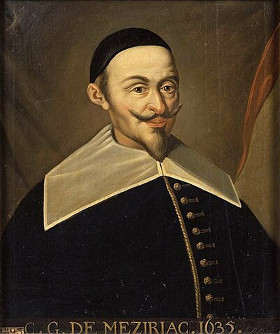

1581–1638
French
Number theory, recreational mathematics, translation
Bachet de Méziriac occupies an unusual position in mathematical history: he is remembered less for proving new theorems than for making old ones accessible. Born in Bourg-en-Bresse to a wealthy family, he studied with the Jesuits and spent much of his adult life as a gentleman scholar, dividing his time between poetry, linguistics, and mathematics.
His most consequential work was his 1621 Latin translation of Diophantus' Arithmetica, the ancient Greek text on solving equations in integers. It was in the margins of this very edition that Pierre de Fermat wrote his famous note claiming a proof of what became Fermat's Last Theorem. Without Bachet's translation, Fermat might never have encountered the problem.
In number theory proper, Bachet explicitly stated the result now called Bézout's identity as early as 1624 — that the greatest common divisor of two integers can always be written as a linear combination of them. The result is often attributed to Étienne Bézout, who published it in 1770, but Bachet got there first by nearly 150 years.
His Problèmes plaisants (1612) is one of the earliest books of recreational mathematics, containing puzzles about river crossings, weighing problems, and card tricks that are still taught today. Bachet was elected to the Académie française in 1635, three years before his death — one of the few mathematicians to receive that literary honour.
| Phase | Page | Referenced for |
|---|---|---|
| Phase 1 | Divisibility and the Euclidean Algorithm | Stated Bézout's identity in 1624, before Bézout |